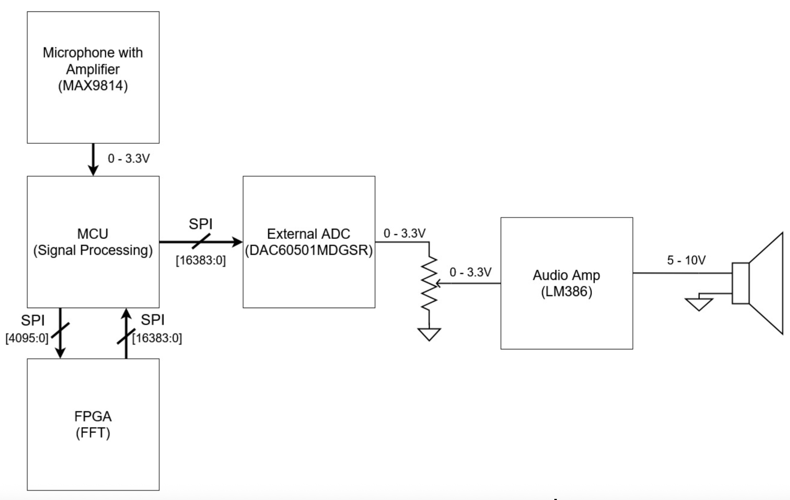
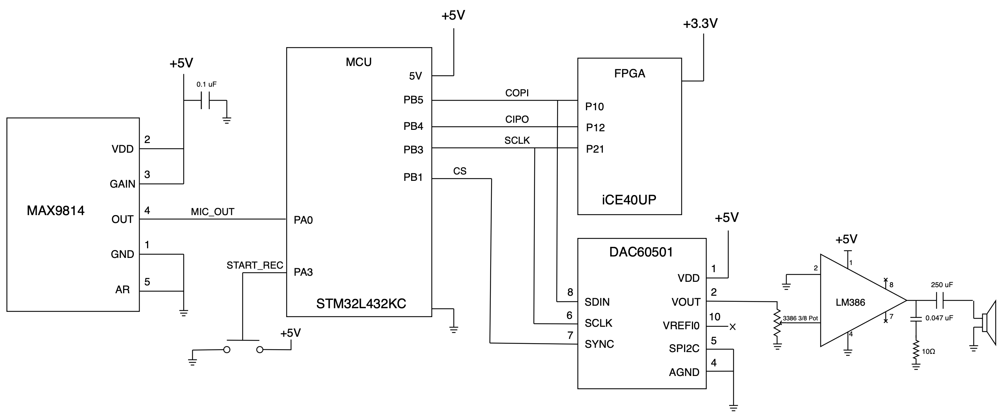
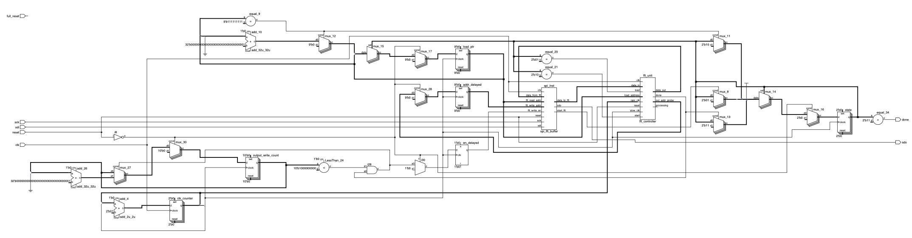
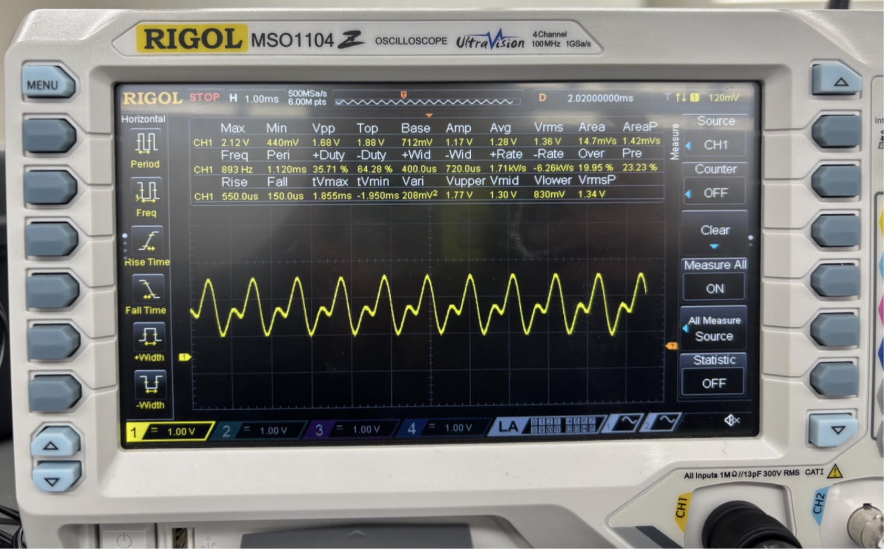
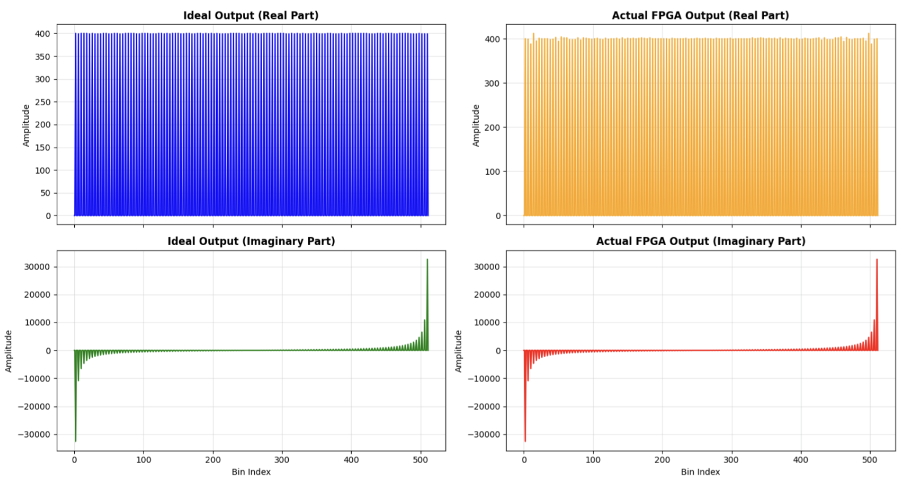
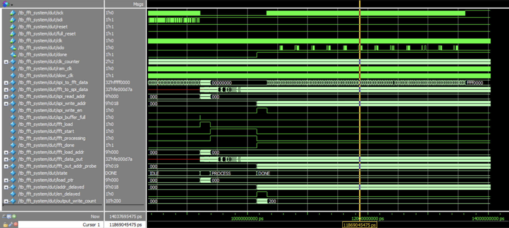
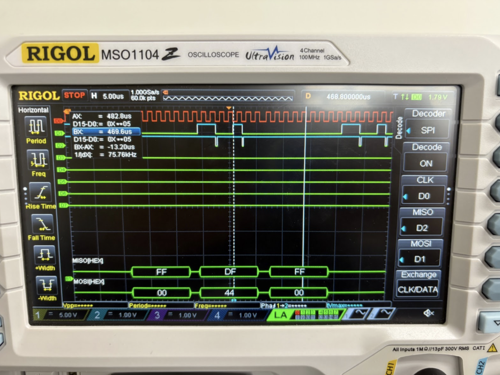
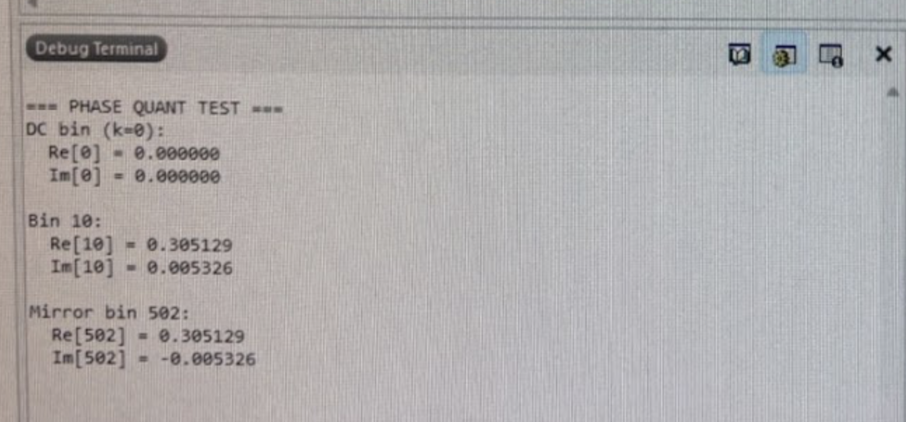
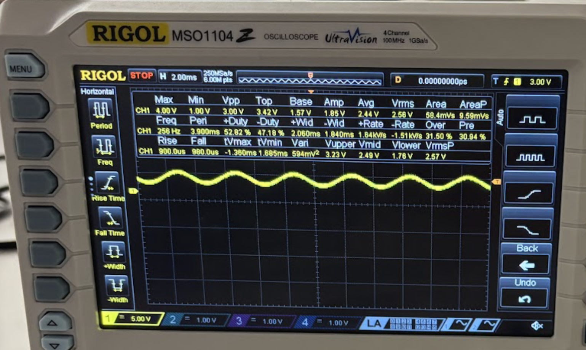
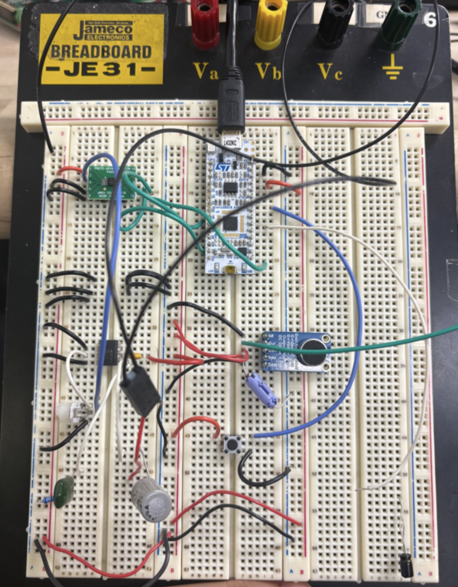

Project Report
Personal Bios
Emma Angel is a senior at Harvey Mudd College studying Engineering with a concentration in History. Her focus is in electrical engineering, with experience in PCB design, circuit analysis, and firmware development. She has also worked in manufacturing engineering, where she gained exposure to production processes and efforts to improve consistency and replicability. Emma is interested in learning more about microprocessors and embedded systems, and she enjoys developing her digital design skills through hands-on projects. She values opportunities to collaborate across disciplines to solve practical problems. Here is her website.
Shreya Jampana is a senior at Harvey Mudd College studying Engineering with a concentration in Anthropology. Her focus is in electrical engineering, with a special emphasis and interest in analog and RF systems. She also has experience in mechanical design and manufacturing. She’s interested in digital design and microprocessor-based systems, and gained a lot of hands-on experience from this course. She’s especially motivated by projects that drive meaningful impact, from advancing technologies in the biotech space to supporting environmental sustainability. Here is her website.
Jared Carreno is a senior engineering major at Harvey Mudd College. He is most focused on electrical and mechanical design interested in exploring embedded systems and full system design. Here is his website.
Abstract
This project was inspired by autotune, more specifically those children toy karaoke microphones that have a robotic sounding output. The user will press a button to begin recording their voice and then release the button when they are done, the “autotuned” output will then play over the speaker. We say “autotune” because we choose to go with an effect that results in a fun robotic sounding effect. The system works by first recording the input on a microphone. The audio is sampled at 16 kHz by the ADC on the MCU and then sent over SPI to the FPGA. The FPGA performs a 512-point FFT and then sends back the data to the MCU over SPI. The MCU then performs some signal processing including a phase quantization to get that robotic effect and an IFFT to reconstruct the real time signal. The data is then sent over SPI to an external DAC to output on the speaker. This process is detailed in the block diagram below.

Documentation
Schematic
Shown below is the electrical schematic of the system. The microphone used was a MAX9814 which has a built-in gain and filtering allowing us to feed this output directly into the MCU without an additional receive circuit. A simple button was used to begin recording the audio that the user will interact with. The SPI lines to the FPGA are shown. The external DAC60501 is shown sharing the same bus as the FPGA with its own chip select line. The 12-bit DAC then outputs a voltage that goes through an LM368 for gain and outputs through a speaker.

Project Schedule
To create a work breakdown for this project, we created this Gantt Chart, which details the steps needed to be done for all components of the system. These steps are broken down to all the team members and are also divided to cover the remaining four weeks of the course.
Budget Details
This BOM contains all the parts needed for this project, including the part number, datasheet, quantity, and price, ensuring that we are staying below the maximum $50 budget for this project.
Source Code
All of the code for the project can be found in this Github repository.
MCU Design overview
The MCU used was a STM32L432KC. The new peripheral enabled was the ADC used to sample the data from the microphone, convert to a digital signal, and then send the data over to the FPGA using SPI. The sampling rate was chosen to be around 16kHz to limit the amount of data being sent and processed by the FPGA. The tradeoff is missing frequencies above 6kHz per the nyquist theorem, however, since we intend to test on voices the average human voice ranges on the order of a couple hundred hertz [1].
The ADC peripheral was configured to run with as little CPU overhead as possible. This was done by configuring the ADC to store data in DMA. The ADC triggers on its own internal clock allowing a reliable sampling frequency determined by the prescaler and sample time. The ADC clock is derived from the system 80MHz clock. When the ADC is sampling it fills a 1024 size buffer with data size of 8 bits. DMA interrupts are enabled to trigger when the buffer is half-full and full. Every time the interrupt is triggered the 512 new samples are saved and then sent over SPI. Since the SPI is transmitted over at 625kHz we can empty out the buffer faster then we are filling the buffer since we sample at 16kHz. This means that the first half and second half of the buffers can be saved and emptied without worry that the ADC will override the values while they are still being transmitted.
The recording of the data takes place when the button is being pressed down and stops when the button is released. This was implemented by polling a GPIO pin that is connected to the button. When the button is high (pressed) the ADC and DMA are enabled and the sampling begins which triggers the SPI transactions. When the button is low (not pressed) the ADC and DMA are turned off to prevent any extra sampling and to save CPU usage for other processes down the data chain.
The FPGA sends back the FFT data over SPI. That data is then saved in a buffer and processed. The first step in processing the sample is some sort of alteration to the complex data to alter the output. The team implemented a phase quantization which results in a robotic effect when the signal is reconstructed. The quantization works by snapping the phase of each bin to a few discrete values. This will force each FFT bin’s phase to the nearest value in a set of fixed phase angles. Once the phases have been altered an IFFT is performed on the data. The CMSIS-DSP library was used to perform the IFFT and support complex math functions. Lastly, to construct the real time signal a Hanning window is applied and then overlap-adds to each IFFT frame so that all overlapping pieces sum together to one continuous real-time waveform. The data then goes through some slight scaling and offset to make sure that it outputs a voltage value to the DAC that is in the desired 0-5V range. The voltage values are sent over SPI at a timed rate to an external DAC60501. The timed rate must match the sampling rate of 16kHz to ensure the time scale corresponds to the original signal.
FPGA Design Overview
This project’s designs were run on an UPduino v3.1, a low-cost board featuring an iCE40 UltraPlus FPGA. The primary responsibility of the FPGA was to accept and handle the microphone data being sampled by the MCU’s ADC, then perform a Fast Fourier Transform (FFT) to extract frequency components, and transmit the results back to the microcontroller for further processing and audio reconstruction. The FPGA design’s system clock was driven by the built-in HSOSC module running at 12 MHz. To handle data coming from the MCU, the design implemented a buffer at the FFT input stage. This allowed the data to cross safely from the slower, intermittent SPI clock domain into the high-speed, continuous FPGA clock domain without data corruption or metastability issues.
Once the SPI module’s input buffer assembled a complete 16-bit sample, it was immediately pushed into the processing pipeline. The control logic was implemented as a finite state machine that monitored the input. When valid data was available, a control signal told the FFT to begin processing. The output of the processing chain was then serialized and held in an output buffer, ready to be shifted out on the MISO line during the next SPI transaction initiated by the master MCU.

FPGA Design Overview: FFT
The team’s FFT design was an adaptation of the provided 32-point FFT design by Alec Vercruysse [2], though some significant changes to ensure operation of the significantly larger FFT.
The Fast Fourier Transform (FFT) system was implemented using a SystemVerilog architecture comprising four primary modules: the SPI bridge, the central FFT Controller, the Address Generation Unit (AGU), and the Datapath (Butterfly Unit and Memory). The design calculates a 512-point FFT using a decimation-in-time algorithm.
Multiple clocks were employed to prevent timing conflicts between modules. The fft_controller module utilizes three distinct clock domains: a system clk, a ram_clk for memory operations, and a slow_clk for state management. This differs from the reference design, which operated on a single global clock domain. The slow_clk drives the control logic and address generation to ensure addresses are stable before memory operations, while the ram_clk drives the memory blocks.
Aside from the addition of two new clock domains, the core logic had to be scaled to 9 bits to account for the additional stages of computation required to compute a 512-point FFT. The width of the core logic was based on the fact that 29 is 512, meaning that this design would require nine stages of computation where the FFT is divided into two smaller FFTs in each stage.
The design’s memory was split up into two blocks, ram0 and ram1, which were then split into two separate blocks each with four blocks of RAM total: ram0_a, ram0_b, ram1_a, ram1_b. This was a design choice made to ensure that data was being read from ram0 and write results to ram1. The butterfly iteration was expanded to count up to half of the FFT’s size (255, including zero) since the FFT is symmetric and all unique values are calculated within the first half. Upon completion of all nine computational stages, the FFT is designed to raise a ‘done’ signal that indicates completion.
The AGU’s role is to calculate the read and write indices for the memory banks dynamically based on the current computational stage, fft_level, and the current butterfly iteration, butterfly_iter. This module is also important for ensuring that the correct twiddle factors are correctly selected by generating the address of the twiddle factor based on fft_level and butterfly_iter as well. In the final section of the module, the bits are reversed given the fact that the DIT algorithm produces outputs in bit-reversed order, ensuring that the data being stored is correct.
FPGA Design Overview: SPI
In order to move data between the MCU and FFT, the FPGA uses a custom SPI interface coordinated by a pair of small FSMs. Due to the MCU’s SPI clock being asynchronous to the FPGA’s 12 MHz internal clock, all incoming edges are first passed through synchronizers. This guarantees that each SPI transition is cleanly detected and treated as a synchronous event.
On the input side, an FSM monitors synchronized clock edges, shifts bits into an 8-bit register, and writes each completed byte into a 512-entry buffer. Each 8-bit audio sample is then expanded into the 32-bit complex format required by the FFT by sign-extending the real part to 16 bits and setting the imaginary part to 0. Once this buffer has been completely filled with a frame of audio samples, the FSM asserts a short trigger signal indicating that the FFT can begin processing. The return path is handled by a second FSM. As the FFT generates its 32-bit complex outputs, they are written into an output buffer. During the next SPI transaction from the MCU, the FSM fetches each word, inserts a once-cycle wait to allow the memory read to settle, loads the word into a shift register, and then shifts it out bit-by-bit on subsequent SPI clock edges.
These coordinated state machines allow the MCU to stream audio data into the FPGA while receiving FFT results in real time, all through an SPI link that safely bridges the two clock domains.
Analog Design Overview [RX, TX chains, New Hardware]
The pre-amp purchased was a MAX9814 which has a microphone built in along with set gain settings. Testing was conducted to determine the output range of the microphone under different conditions. We found that the range of the output was always within the specified range of 3mV to 2.4V which lands very nicely in the range of our MCU which is 0-3.3V. Therefore, these settings were sufficient allowing us to feed the output directly into the MCU without need of a gain and offset signal chain. Testing also revealed clear sine waves even in a very noisy environment which showed promise for getting reliable data off of the microphone.
The transmit chain consisted of a 12-bit DAC and a low voltage power amplifier that fed into an 8-ohm speaker. The output data was sent over SPI to the DAC60501 which was configured to output a voltage range between 0 and 5V. Then output fed into the LM368 which was configured to have a gain of 20 with a potentiometer for adjustable volume. An 8-ohm speaker played the output.
The new non-trivial hardware was an external DAC60501; the 12-bit digital-to-analog converter provided a highly accurate voltage output. The device includes an internal 2.5V reference which was used along with a gain configuration of 2 to allow for an output range of 0-5V. The DAC has a power on reset circuit that sets the DAC to midscale 2.5V at power up. The device consumes a low current of 1 mA allowing it to be powered off of the MCU’s 5V supply. The device also has a selectable SPI or I2C mode, here it was configured to be in SPI mode. To set the voltage of the DAC a 24-bit message is sent over SPI, the first 8 bits being the address of the register here we write to the DAC DATA register, the next 12-bits contain the DAC voltage code based on the equation detailed in the datasheet and the last 4 bits are zeros.
Main Results
The project met most of the intended specs, which are shown below: - The system captures microphone input through the MCU’s ADC.
The system uses an external DAC to output processed audio from the FPGA.
Audio data is transferred between the MCU and FPGA using the SPI protocol with no dropped samples.
The FPGA performs pitch detection and phase quantization.
The system quantizes each FFT bin’s phase to one of 16 levels while preserving the bin’s magnitude within ±1%.
The output of the system starts playing one second after the user is finished speaking.
The final result of the project did not end up producing a robotic or “autotuned” response, but this is primarily due to one error in the SPI communication. Despite this, all other critical components of the project functioned as expected, and their results, which were individually verified, are outlined below to show how they met the intended specs.
As detailed in the analog design overview, testing the MAX9814 revealed that even in a noisy lab environment, clean waves could be extracted from the microphone that were within the required voltage input of the MCU (0 to 3.3 V). These results are shown below in Figure 4. The system also successfully captured the microphone’s input through the MCU’s internal ADC. As detailed in the MCU design section, the sampling rate was chosen to be around 16kHz due to the intent of testing on human voices, whose range is on the order of hundreds of Hertz.

The FFT functionality on the FPGA was tested thoroughly. Using a Python script, a square wave with an amplitude of 100 was generated and outputted to a .memh file in hex format. This allowed the team to feed data into the FFT to verify functionality. In addition to the test data, the twiddle factors were also generated using a Python script and written to a .memh file in binary format. These twiddle factors are fundamental to the calculation since they serve as the FFT’s roots of unity for a given index k.
For validation of the FPGA FFT implementation, the sample input data was fed into NumPy’s ‘fft’ function and the fft_controller.sv module was simulated in QuestaSim. As shown below in Figure 5, the output of the simulated FPGA implementation was relatively close to NumPy’s FFT implementation with a maximum amplitude difference of 18.

The SPI communication between the MCU and FPGA was only functioning partly in hardware, which is the reason the project was not able to perform a live demonstration. After writing the code for the SPI communication, the team tested the functionality on software first with a testbench, which is shown below in Figure 6. This testbench was aimed at testing the full function of the FPGA, which was done by giving an example sample into the sdi line, having this be transferred into and processed by the FFT, and outputting the processed samples on the sdo line. This testbench ran successfully, and all states of the FSM, flags, trigger signals, and outputs were checked to follow expected behavior. Using this, the team was able to conclude that the SPI module was functioning as expected. When testing the SPI functionality on the hardware by sending an example sample from the MCU to the FPGA, successful transfer of the sample from the MCU to the FPGA was observed. However, there was no valid output observed on the sdo line. This behavior is shown below in Figure 7. A lot of testing was done to troubleshoot this, but ultimately, due to time limits, we were unable to identify the issue. However, we are confident that our SPI module functions conceptually; there was just some persisting hardware/analog bug that was limiting output from the FPGA.


The team also tested the phase quantization “autotune effect” individually, and confirmed that the MCU successfully performed this. As described in the MCU design section, the MCU takes in the first 256 bins of the FFT output, and uses Hermitian symmetry to conjugate these to the full 512 frames. Then it performs phase quantization, where it quantizes the phase to a discrete step and rebuilds the complex bin with the same magnitude and new phase. This was tested by inputting a sample known FPGA output frame into FPGA and testing the DC bin, an active bin, and its conjugate. The DC bin is 0, as expected. Given the known input and the scaling factor in the function, the real value of bin 10 is also as expected. Hermitial symmetry was also proved to be functioning, because the mirror bin of bin 10 was its conjugate. These outputs showing a successful phase quantization test are shown below in Figure 7. This test also verified that the system quantizes each FFT bin’s phase while preserving the bin’s magnitude within 1%. We used 16 phase levels because it produces a clear robotic effect while remaining computationally efficient on the STM32. Since the magnitude is carried through unchanged, its amplitude should be within ±1% while the phase becomes discretized, which is proved below in Figure 8.

Testing also proved that the system can output a desired signal to the DAC, however, it is not necessarily processed from the FPGA. To test this the FFT of a sine wave was generated and then fed into the phase quantization function and IFFT+reconstruction. Then the voltage values were sent to the DAC and probed showing the desired frequency of 256Hz, as shown in Figure 9. This showed that the DAC was able to output a wave of a desired frequency and that the signal processing behaved as expected.

Due to the extensive isolated tests we ran on the system, we reached the conclusion that except the hardware bug in SPI limiting the output from the FPGA, the rest of the system works as intended. A final test was performed to prove this by playing out the wave shown in Figure 8 which resulted in a robotic effect output. The result of this is also shown in the video below. Our circuitry on the breadboard is shown below in Figure 10.

References
[1] DPA Microphones, “Singing voices and frequencies.” DPA Microphones Mic University. https://www.dpamicrophones.com/dict/singing-voices-and-frequencies/ (accessed Dec. 5, 2025).
[2] A. Vercruysse, M. Weston Miller, J. Brake, and D. Harris, “A Tutorial-style Single-cycle Fast Fourier Transform Processor,” Proceedings of the Great Lakes Symposium on VLSI 2022, Jun. 2022, doi: https://doi.org/10.1145/3526241.3530329.
Acknowledgements
The team would like to acknowledge Prof. Spencer and the E155 TA’s, as their help was essential to the success of our project and overall learning in the course. We would also like to acknowledge our fellow classmates, with whom we discussed our ideas and approaches and collaborated during troubleshooting stages, a key component of the course.